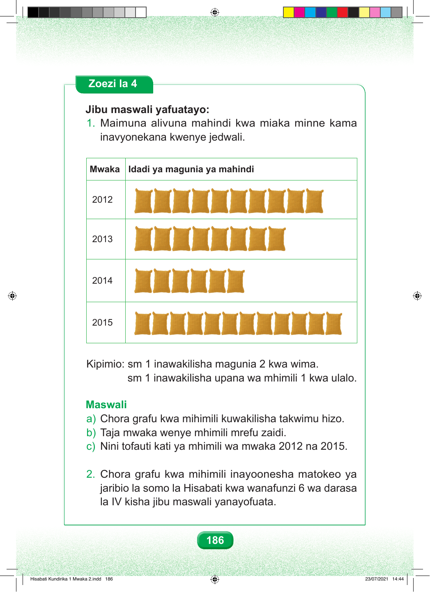

Zoezi la 4 Jibu maswali yafuatayo: 1. Maimuna alivuna mahindi kwa miaka minne kama inavyonekana kwenye jedwali. Mwaka Idadi ya magunia ya mahindi 2012 2013 2014 2015 Kipimio: sm 1 inawakilisha magunia 2 kwa wima. sm 1 inawakilisha upana wa mhimili 1 kwa ulalo. Maswali a) Chora grafu kwa mihimili kuwakilisha takwimu hizo. b) Taja mwaka wenye mhimili mrefu zaidi. c) Nini tofauti kati ya mhimili wa mwaka 2012 na 2015. 2. Chora grafu kwa mihimili inayoonesha matokeo ya jaribio la somo la Hisabati kwa wanafunzi 6 wa darasa la IV kisha jibu maswali yanayofuata. 186 Hisabati Kundirika 1 Mwaka 2.indd 186 23/07/2021 14:44